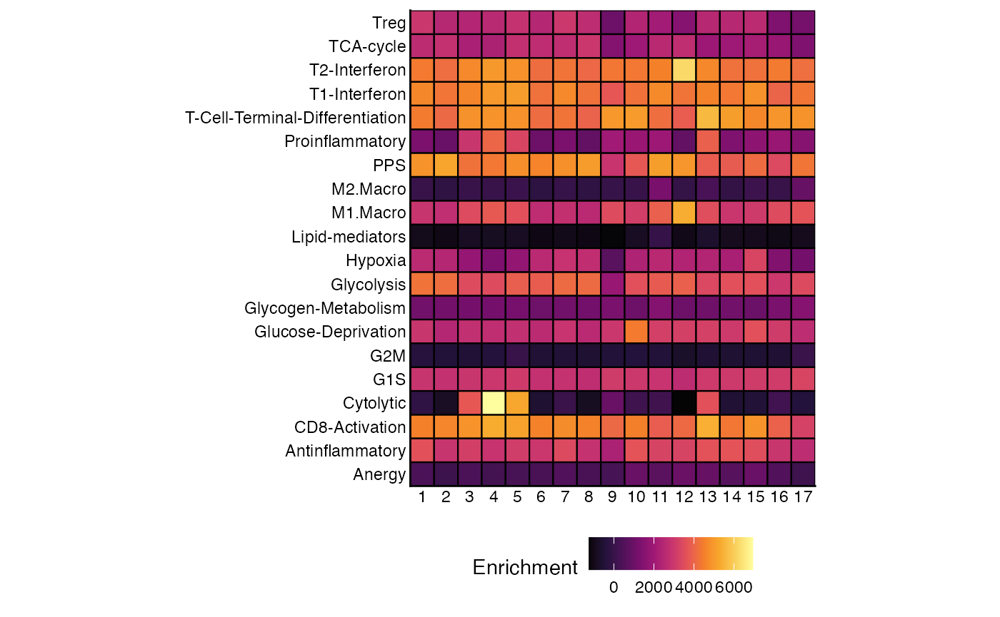
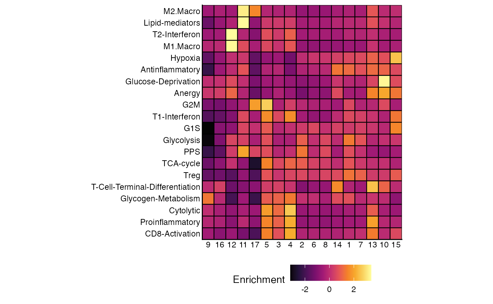
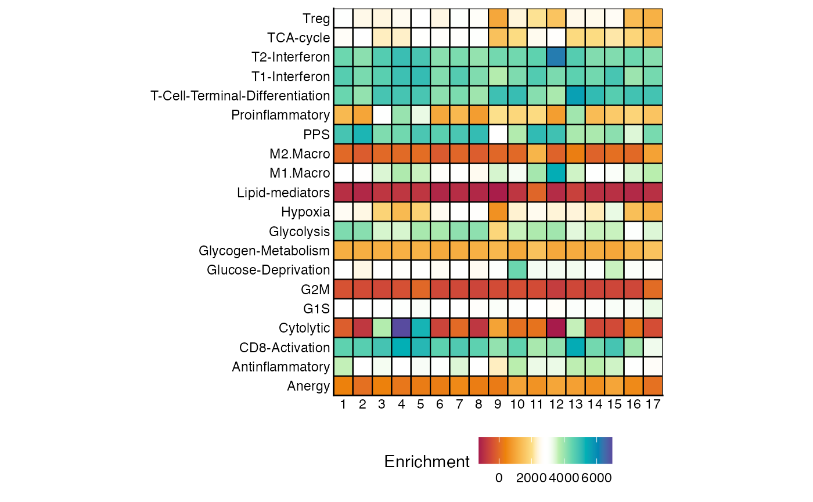
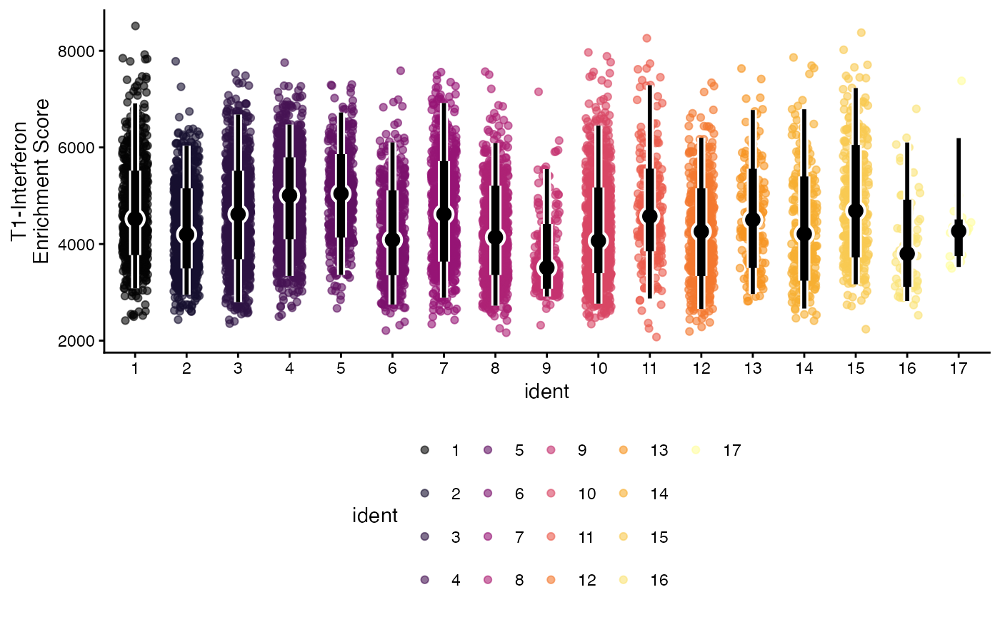
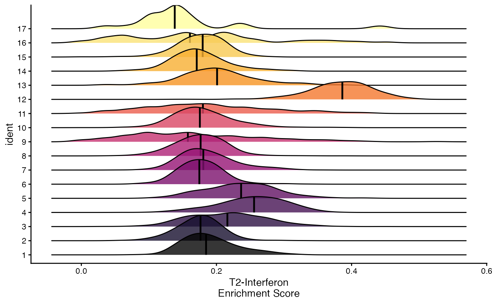
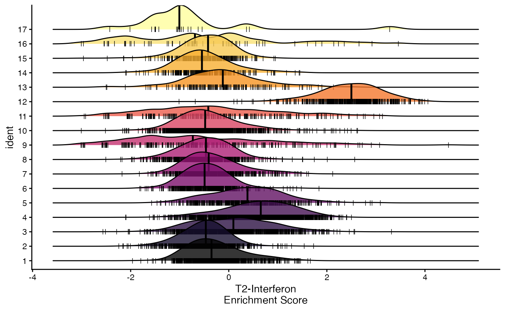
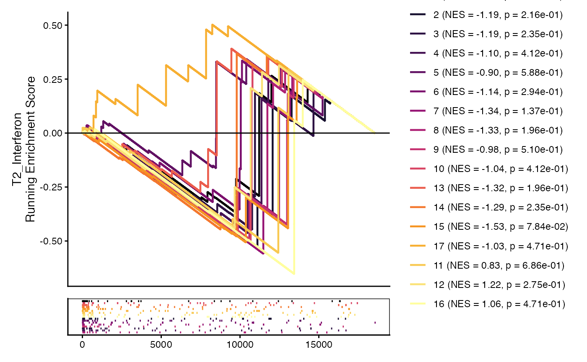
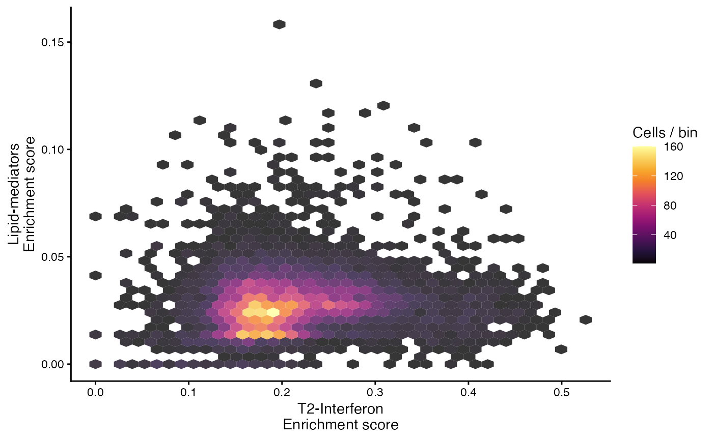

Single-cell Gene Set Enrichment Analysis
Compiled: July 31, 2025
Source:vignettes/articles/Running_Escape.Rmd
Running_Escape.RmdOverview
escape is a R package designed for Easy single-cell analysis platform for enrichment. As the tortuous acronym implies, escape was designed as a user-friendly package for gene set enrichment analysis that leverages the heterogeneity of single-cell data. escape turns raw single-cell counts into intuitive, per-cell gene-set scores with a single command and then provides plotting helpers to interrogate them.
The core workflow is:
- Choose gene-set library (
getGeneSets()or your own list) - Score cells (
runEscape()) - (Optional) Normalize for drop-out
(
performNormalization()) - Explore with the built-in visualization gallery
More information is available at the GitHub Repo.
Citation
If using escape, please cite the article: Borcherding, N., Vishwakarma, A., Voigt, A.P. et al. Mapping the immune environment in clear cell renal carcinoma by single-cell genomics. Commun Biol 4, 122 (2021).
Installation
devtools::install_github("BorchLab/escape")
if (!require("BiocManager", quietly = TRUE))
install.packages("BiocManager")
BiocManager::install("escape")Loading Data
For the purposes of the vignette, we will use the scRepertoire full example data. More information is available here. We will subset the data for patient 17 and 18 from the data set in order to speed up the calculations.
Getting Gene Sets
Option 1: Built-In gene sets
data("escape.gene.sets", package="escape")Option 2: MSigDB via getGeneSets()
Gene set enrichment analysis begins by identifying the appropriate
gene sets for your study. The getGeneSets() function
simplifies this process by extracting one or more gene set libraries
from the Molecular Signature Database (MSigDB) and returning them as a
GSEABase GeneSetCollection object. Note that the first time you run
getGeneSets(), it downloads a complete local copy of the
gene sets, which may take a little while. Future calls will use the
cached version, greatly improving performance.
To retrieve gene set collections from MSigDB, specify the library or libraries of interest using the library parameter. For example, to select multiple libraries, use:
- subcategory: Narrow down your selection by specifying subcategories within a library. Examples include “CGN”, “CGP”, “CP:BIOCARTA”, “CP:KEGG”, “GO:BP”, “IMMUNESIGDB”, etc.
- gene.sets: Isolate individual pathways or gene sets by providing their specific names.
GS.hallmark <- getGeneSets(library = "H")Option 4: Using msigdbr
msigdbr is an alternative R package to access the Molecular Signature Database in R. There is expanded support for species in the package as well as a mix of accessible versus downloadable gene sets, so it can be faster than caching a copy locally.
GS.hallmark <- msigdbr(species = "Homo sapiens",
category = "H")Performing Enrichment Calculation
Several popular methods exist for Gene Set Enrichment Analysis (GSEA). These methods can vary in the underlying assumptions. escape incorporates several methods that are particularly advantageous for single-cell RNA values:
ssGSEA
This method calculates the enrichment score using a rank-normalized approach and generating an empirical cumulative distribution function for each individual cell. The enrichment score is defined for a gene set (G) using the number of genes in the gene set (NG) and total number of genes (N).
Please see the following citation for more information.
GSVA
GSVA varies slightly by estimating a Poisson-based kernel cumulative density function. But like ssGSEA, the ultimate enrichment score reported is based on the maximum value of the random walk statistic. GSVA appears to have better overall consistency and runs faster than ssGSEA.
Please see the following citation for more information.
AUCell
In contrast to ssGSEA and GSVA, AUCell takes the gene rankings for each cell and step-wise plots the position of each gene in the gene set along the y-axis. The output score is the area under the curve for this approach.
Please see the following citation for more information.
UCell
UCell calculates a Mann-Whitney U statistic based on the gene rank list. Importantly, UCell has a cut-off for ranked genes () at 1500 - this is per design as drop-out in single-cell can alter enrichment results. This also substantially speeds the calculations up.
The enrichment score output is then calculated using the complement of the U statistic scaled by the gene set size and cut-off.
$$ U_j^` = 1-\frac{U_j}{n \bullet r_{max}} $$
Please see the following citation for more information.
escape.matrix
escape has 2 major functions - the first being
escape.matrix(), which serves as the backbone of enrichment
calculations. Using count-level data supplied from a single-cell object
or matrix, escape.matrix() will produce an enrichment score
for the individual cells with the gene sets selected and output the
values as a matrix.
method
- AUCell
- GSVA
- ssGSEA
- UCell
groups
- The number of cells to calculate at once.
min.size
- The minimum size of detectable genes in a gene set. Gene sets less than the min.size will be removed before the calculation.
normalize
- Use the number of genes from the gene sets in each cell to normalize the enrichment scores. The default value is FALSE.
make.positive
- During normalization, whether to shift the enrichment values to a positive range (TRUE) or not (FALSE). The default value is FALSE.
Cautionary note: make.positive was added to allow for differential analysis downstream of enrichment as some methods may produce negative values. It preserves log-fold change, but ultimately modifies the enrichment values and should be used with caution.
enrichment.scores <- escape.matrix(scRep_example,
gene.sets = escape.gene.sets,
groups = 1000,
min.size = 5)
ggplot(data = as.data.frame(enrichment.scores),
mapping = aes(enrichment.scores[,1], enrichment.scores[,2])) +
geom_point() +
theme_classic() +
theme(axis.title = element_blank())
Multi-core support is for all methods is available through BiocParallel.
To add more cores, use the argument BPPARAM to
escape.matrix(). Here we will use the
SnowParam() for it’s support across platforms and
explicitly call 2 workers (or cores).
enrichment.scores <- escape.matrix(scRep_example,
gene.sets = escape.gene.sets,
groups = 1000,
min.size = 3,
BPPARAM = BiocParallel::SnowParam(workers = 2))runEscape
Alternatively, we can use runEscape() to calculate the
enrichment score and directly attach the output to a single-cell object.
The additional parameter for ``runEscape is
new.assay.name, in order to save the enrichment scores
as a custom assay in the single-cell object.
scRep_example <- runEscape(scRep_example,
method = "ssGSEA",
gene.sets = escape.gene.sets,
groups = 1000,
min.size = 3,
new.assay.name = "escape.ssGSEA")
scRep_example <- runEscape(scRep_example,
method = "UCell",
gene.sets = escape.gene.sets,
groups = 1000,
min.size = 5,
new.assay.name = "escape.UCell")We can quickly examine the attached enrichment scores using the
visualization/workflow we prefer - here we will use just
FeaturePlot() from the Seurat R package.
#Define color palette
colorblind_vector <- hcl.colors(n=7, palette = "inferno", fixup = TRUE)
DefaultAssay(scRep_example) <- "escape.ssGSEA"
FeaturePlot(scRep_example, "Proinflammatory") +
scale_color_gradientn(colors = colorblind_vector) +
theme(plot.title = element_blank())
performNormalization
Although we glossed over the normalization that can be used in
escape.matrix() and runEscape(), it is worth
mentioning here as normalization can affect all downstream analyses.
There can be inherent bias in enrichment values due to drop out in
single-cell expression data. Cells with larger numbers of features and
counts will likely have higher enrichment values.
performNormalization() will normalize the enrichment values
by calculating the number of genes expressed in each gene set and cell.
This is similar to the normalization in classic GSEA and it will be
stored in a new assay.
scRep_example <- performNormalization(input.data = scRep_example,
assay = "escape.ssGSEA",
gene.sets = escape.gene.sets)An alternative for scaling by expressed gene sets would be to use a scaling factor previously calculated during normal single-cell data processing and quality control. This can be done using the scale.factor argument and providing a vector.
scRep_example <- performNormalization(input.data = scRep_example,
assay = "escape.ssGSEA",
gene.sets = escape.gene.sets,
scale.factor = scRep_example$nFeature_RNA)performNormalization() has an additional parameter
make.positive. Across the individual gene sets, if
negative normalized enrichment scores are seen, the minimum value is
added to all values. For example if the normalized enrichment scores
(after the above accounting for drop out) ranges from -50 to 50,
make.positive will adjust the range to 0 to 100 (by
adding 50). This allows for compatible log2-fold change downstream, but
can alter the enrichment score interpretation.
Visualizations
There are a number of ways to look at the enrichment values
downstream of runEscape() with the myriad plotting and
visualizations functions/packages for single-cell data. escape
include several additional plotting functions to assist in the
analysis.
heatmapEnrichment
We can examine the enrichment values across our gene sets by using
heatmapEnrichment(). This visualization will return the
mean of the group.by variable. As a default - all
visualizations of single-cell objects will use the cluster assignment or
active identity as a default for visualizations.
heatmapEnrichment(scRep_example,
group.by = "ident",
gene.set.use = "all",
assay = "escape.ssGSEA")
Most of the visualizations in escape have a defined set of parameters.
group.by
- The grouping variable for the comparison.
facet.by
- Using a variable to facet the graph into separate visualizations.
scale
- TRUE - z-transform the enrichment values.
- FALSE - leave raw values (DEFAULT).
In addition, heatmapEnrichment() allows for the
reclustering of rows and columns using Euclidean distance of the
enrichment scores and the Ward2 methods for clustering using
cluster.rows and cluster.columns.
heatmapEnrichment(scRep_example,
group.by = "ident",
assay = "escape.UCell",
scale = TRUE,
cluster.rows = TRUE,
cluster.columns = TRUE)
Each visualization has an additional argument called **palette that
supplies the coloring scheme to be used - available color palettes can
be viewed with hcl.pals().
hcl.pals()## [1] "Pastel 1" "Dark 2" "Dark 3" "Set 2"
## [5] "Set 3" "Warm" "Cold" "Harmonic"
## [9] "Dynamic" "Grays" "Light Grays" "Blues 2"
## [13] "Blues 3" "Purples 2" "Purples 3" "Reds 2"
## [17] "Reds 3" "Greens 2" "Greens 3" "Oslo"
## [21] "Purple-Blue" "Red-Purple" "Red-Blue" "Purple-Orange"
## [25] "Purple-Yellow" "Blue-Yellow" "Green-Yellow" "Red-Yellow"
## [29] "Heat" "Heat 2" "Terrain" "Terrain 2"
## [33] "Viridis" "Plasma" "Inferno" "Rocket"
## [37] "Mako" "Dark Mint" "Mint" "BluGrn"
## [41] "Teal" "TealGrn" "Emrld" "BluYl"
## [45] "ag_GrnYl" "Peach" "PinkYl" "Burg"
## [49] "BurgYl" "RedOr" "OrYel" "Purp"
## [53] "PurpOr" "Sunset" "Magenta" "SunsetDark"
## [57] "ag_Sunset" "BrwnYl" "YlOrRd" "YlOrBr"
## [61] "OrRd" "Oranges" "YlGn" "YlGnBu"
## [65] "Reds" "RdPu" "PuRd" "Purples"
## [69] "PuBuGn" "PuBu" "Greens" "BuGn"
## [73] "GnBu" "BuPu" "Blues" "Lajolla"
## [77] "Turku" "Hawaii" "Batlow" "Blue-Red"
## [81] "Blue-Red 2" "Blue-Red 3" "Red-Green" "Purple-Green"
## [85] "Purple-Brown" "Green-Brown" "Blue-Yellow 2" "Blue-Yellow 3"
## [89] "Green-Orange" "Cyan-Magenta" "Tropic" "Broc"
## [93] "Cork" "Vik" "Berlin" "Lisbon"
## [97] "Tofino" "ArmyRose" "Earth" "Fall"
## [101] "Geyser" "TealRose" "Temps" "PuOr"
## [105] "RdBu" "RdGy" "PiYG" "PRGn"
## [109] "BrBG" "RdYlBu" "RdYlGn" "Spectral"
## [113] "Zissou 1" "Cividis" "Roma"
heatmapEnrichment(scRep_example,
assay = "escape.ssGSEA",
palette = "Spectral") 
Alternatively, we can add an additional layer to the ggplot object
that is returned by the visualizations using something like
scale_fill_gradientn() for continuous values or
scale_fill_manual() for the categorical variables.
heatmapEnrichment(scRep_example,
group.by = "ident",
assay = "escape.UCell") +
scale_fill_gradientn(colors = rev(brewer.pal(11, "RdYlBu"))) 
geyserEnrichment
We can also focus on individual gene sets - one approach is to use
geyserEnrichment(). Here individual cells are plotted along
the Y-axis with graphical summary where the central dot refers to the
median enrichment value and the thicker/thinner lines demonstrate the
interval summaries referring to the 66% and 95%.
geyserEnrichment(scRep_example,
assay = "escape.ssGSEA",
gene.set = "T1-Interferon")
To show the additional parameters that appear in visualizations of individual enrichment gene sets - we can reorder the groups by the mean of the gene set using order.by = “mean”.
geyserEnrichment(scRep_example,
assay = "escape.ssGSEA",
gene.set = "T1-Interferon",
order.by = "mean")
What if we had 2 separate samples or groups within the data? Another parameter we can use is facet.by to allow for direct visualization of an additional variable.
geyserEnrichment(scRep_example,
assay = "escape.ssGSEA",
gene.set = "T1-Interferon",
facet.by = "Type")
Lastly, we can select the way the color is applied to the plot using the color.by parameter. Here we can set it to the gene set of interest “HALLMARK-INTERFERON-GAMMA-RESPONSE”.
geyserEnrichment(scRep_example,
assay = "escape.ssGSEA",
gene.set = "T1-Interferon",
color.by = "T1-Interferon")
ridgeEnrichment
Similar to the geyserEnrichment() the
ridgeEnrichment() can display the distribution of
enrichment values across the selected gene set. The central line is at
the median value for the respective grouping.
ridgeEnrichment(scRep_example,
assay = "escape.UCell",
gene.set = "T2-Interferon")
We can get the relative position of individual cells along the x-axis using the add.rug parameter.
ridgeEnrichment(scRep_example,
assay = "escape.UCell",
gene.set = "T2-Interferon",
add.rug = TRUE,
scale = TRUE)
splitEnrichment
Another distribution visualization is a violin plot, which we
separate and directly compare using a binary classification. Like
ridgeEnrichment(), this allows for greater use of
categorical variables. For splitEnrichment(), the output
will be two halves of a violin plot based on the
split.by parameter with a central boxplot with the
relative distribution across all samples.
splitEnrichment(scRep_example,
assay = "escape.ssGSEA",
gene.set = "Lipid-mediators",
split.by = "Type")
If selecting a split.by variable with more than 2
levels, splitEnrichment() will convert the violin plots to
dodge.
splitEnrichment(scRep_example,
assay = "escape.ssGSEA",
gene.set = "Lipid-mediators",
split.by = "ident",
group.by = "Patient")
gseaEnrichment
gseaEnrichment() reproduces the two-panel GSEA graphic
from Subramanian et al. (2005): * Panel A – the running enrichment score
(RES) as you “walk” down the ranked list. * Panel B – a rug showing
exact positions of each pathway gene.
It works on escape’s per-cell ranks, but collapses them across cells with a summary statistic (summary.fun = “median” by default).
How it works:
- Rank all genes in each group by summary.fun of expression/statistic.
- Perform the weighted Kolmogorov–Smirnov walk: +w when the next gene is in the set, −1/(N − NG) otherwise.
- ES = maximum signed deviation; permutation on gene labels (or phenotypes) to derive NES and p.
gseaEnrichment(scRep_example,
gene.set.use = "T2_Interferon",
gene.sets = escape.gene.sets,
group.by = "ident",
summary.fun = "mean",
nperm = 50)
densityEnrichment
densityEnrichment() is a method to visualize the mean
rank position of the gene set features along the total feature space by
group. Instead of the classic GSEA running-score, it overlays
kernel-density traces of the gene ranks (1 =
most highly expressed/ranked gene) for every group or cluster. High
densities at the left-hand side mean the pathway is
collectively up-regulated; peaks on the right
imply down-regulation.
Anatomy of the plot
-
X-axis – gene rank (1 … N). Left =
top-ranked genes.
-
Y-axis – density estimate (area under each curve =
1).
-
One coloured line per level of
group.by– default is Seurat/SCE cluster.
densityEnrichment(scRep_example,
gene.set.use = "T2_Interferon",
gene.sets = escape.gene.sets)scatterEnrichment
It may be advantageous to look at the distribution of multiple gene
sets - here we can use scatterEnrichment() for a 2 gene set
comparison. The color values are based on the density of points
determined by the number of neighbors, similar to the Nebulosa
R package. We just need to define which gene set to plot on the
x.axis and which to plot on the
y.axis.
scatterEnrichment(scRep_example,
assay = "escape.ssGSEA",
x.axis = "T2-Interferon",
y.axis = "Lipid-mediators")
The scatter plot can also be converted into a hexbin, another method for summarizing the individual cell distributions along the x and y axis, by setting style = “hex”.
scatterEnrichment(scRep_example,
assay = "escape.UCell",
x.axis = "T2-Interferon",
y.axis = "Lipid-mediators",
style = "hex")
Statistical Analysis
Principal Component Analysis (PCA)
escape has its own PCA function performPCA() which will
work on a single-cell object or a matrix of enrichment values. This is
specifically useful for downstream visualizations as it stores the
eigenvalues and rotations. If we want to look at the relative
contribution to overall variance of each component or a Biplot-like
overlay of the individual features, use performPCA().
Alternatively, other PCA-based functions like Seurat’s
RunPCA() or scater’s ``runPCA() can be used.
These functions are likely faster and would be ideal if we have a larger
number of cells and/or gene sets.
scRep_example <- performPCA(scRep_example,
assay = "escape.ssGSEA",
n.dim = 1:10)escape has a built in method for plotting PCA
pcaEnrichment() that functions similarly to the
scatterEnrichment() function where x.axis
and y.axis are the components to plot.
pcaEnrichment(scRep_example,
dimRed = "escape.PCA",
x.axis = "PC1",
y.axis = "PC2")pcaEnrichment() can plot additional information on the
principal component analysis.
add.percent.contribution will add the relative percent contribution of the x and y.axis to total variability observed in the PCA.
display.factors will overlay the magnitude and direction that the features/gene sets contribute to the selected components. The number of gene sets is determined by number.of.factors. This can assist in understanding the underlying differences in enrichment across different cells.
pcaEnrichment(scRep_example,
dimRed = "escape.PCA",
x.axis = "PC1",
y.axis = "PC2",
add.percent.contribution = TRUE,
display.factors = TRUE,
number.of.factors = 10)Precomputed Rank Lists
Functional enrichment is not limited to per-cell scores. Many
workflows start with differential-expression (DE)
statistics (e.g. Seurat’s FindMarkers(), DESeq2’s
results(), edgeR’s topTags()). Those produce a
ranked gene list that can be fed into a classical
Gene-Set Enrichment Analysis (GSEA).
Why do this?
-
Aggregates signal across genes: a borderline but
consistent trend across 30 pathway genes is often more
informative than a single high-logFC gene.
- Directionality: by combining log-fold-change (effect size) and an adjusted p-value (confidence)
- Speed: you avoid re-scoring every cell; only one numeric vector is needed.
enrichIt() accepts either
- a named numeric vector (already ranked),
or
- a data frame containing logFC + p (or adj.p).
The helper automatically chooses the best p-value column in this order:
-
p_val_adj
-
padj(DESeq2)
-
FDR(edgeR)
- plain
p_val
Example enrichIt() workflow
DefaultAssay(scRep_example) <- "RNA"
DEG.markers <- FindMarkers(scRep_example,
ident.1 = "1",
ident.2 = "2")
GSEA.results <- enrichIt(input.data = DEG.markers,
gene.sets = escape.gene.sets,
ranking_fun = "signed_log10_p")
head(GSEA.results)## pathway pval padj log2err ES
## <char> <num> <num> <num> <num>
## 1: G1S 0.004459379 0.08918759 0.4070179 0.9495747
## 2: T1_Interferon 0.045590848 0.43715847 0.3217759 0.9916719
## 3: T_Cell_Terminal_Differentiation 0.088135593 0.43715847 0.2820134 0.9905942
## 4: Glucose_Deprivation 0.108474576 0.43715847 0.2529611 0.9869766
## 5: Cytolytic 0.121951220 0.43715847 0.2249661 0.9827274
## 6: Antinflammatory 0.131147541 0.43715847 0.2529611 0.9883311
## NES size leadingEdge geneRatio
## <num> <int> <char> <num>
## 1: 1.552116 63 HIST1H4C;CDKN1A;HIST1H1D;CCNG2;H2AFZ;HIST1H1E;H1FX 0.11111111
## 2: 1.541180 17 OASL 0.05882353
## 3: 1.933083 7 PDCD1;CTLA4 0.28571429
## 4: 1.926023 7 FAM129A;HSPA1A;HSPA1B 0.42857143
## 5: 1.996093 6 GZMB;GZMA;GZMH 0.50000000
## 6: 1.824227 9 LGALS3;PDCD1;FOXP3;CTLA4;ENTPD1 0.55555556What does the result look like?
- ES / NES – raw and normalised enrichment scores from fgsea
- pval / padj – nominal and multiple-testing-corrected p
- size – total number of genes in the set
- geneRatio – (core hits)/(size), useful for dot plots
- leadingEdge – semi-colon-separated genes driving the signal
Visualizing the enrichment table
The companion enrichItPlot() gives three quick chart
types.
## (1) Bar plot –20 most significant per database
enrichItPlot(GSEA.results) +
theme(strip.background = element_blank(),
strip.text.x = element_blank()) 
## (2) Dot plot – colored by –log10 padj, sized by core-hits
enrichItPlot(GSEA.results, "dot", top = 10) +
theme(strip.background = element_blank(),
strip.text.x = element_blank()) 
## (3) C-net plot – network of pathways ↔ leading-edge genes
enrichItPlot(GSEA.results, "cnet", top = 5) Differential Enrichment
Differential enrichment analysis can be performed similar to differential gene expression analysis. For the purposes of finding the differential enrichment values, we can first normalize the enrichment values for the ssGSEA calculations. Notice here, we are using make.positive = TRUE in order to adjust any negative values. This is a particular issue when it comes to ssGSEA and GSVA enrichment scores.
scRep_example <- performNormalization(scRep_example,
assay = "escape.ssGSEA",
gene.sets = escape.gene.sets,
make.positive = TRUE)
all.markers <- FindAllMarkers(scRep_example,
assay = "escape.ssGSEA_normalized",
min.pct = 0,
logfc.threshold = 0)
head(all.markers)## p_val avg_log2FC pct.1 pct.2 p_val_adj cluster
## Cytolytic 8.835726e-33 -0.22290562 1 1 1.767145e-31 1
## TCA-cycle 3.828829e-15 -0.18921087 1 1 7.657658e-14 1
## Antinflammatory 7.518488e-11 -0.09552935 1 1 1.503698e-09 1
## Hypoxia 8.299977e-10 0.02923536 1 1 1.659995e-08 1
## G1S 2.501304e-09 -0.31214094 1 1 5.002607e-08 1
## PPS 3.565329e-09 -0.10738891 1 1 7.130657e-08 1
## gene
## Cytolytic Cytolytic
## TCA-cycle TCA-cycle
## Antinflammatory Antinflammatory
## Hypoxia Hypoxia
## G1S G1S
## PPS PPS